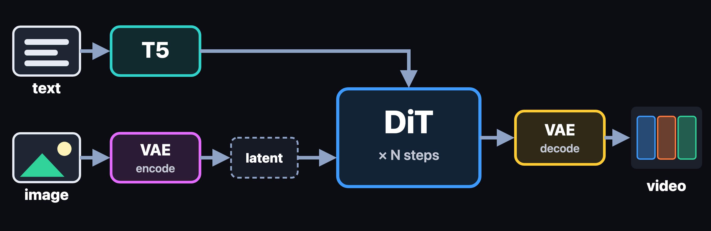
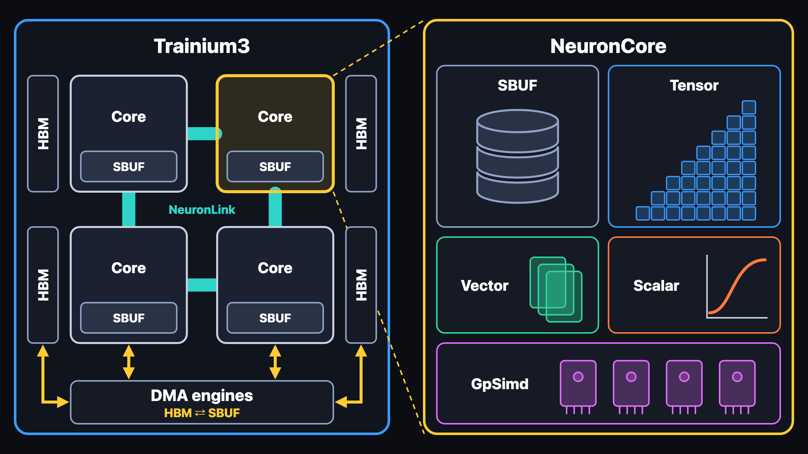
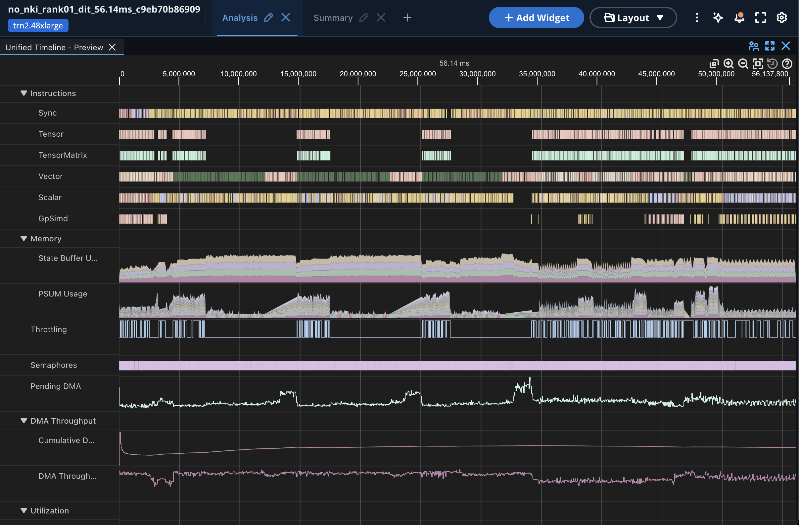
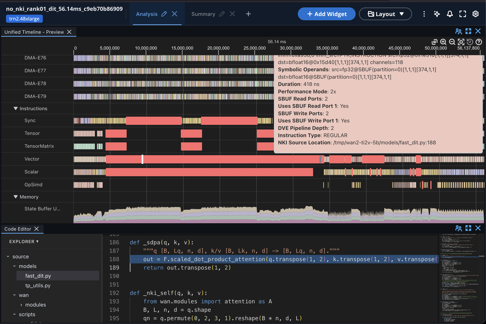
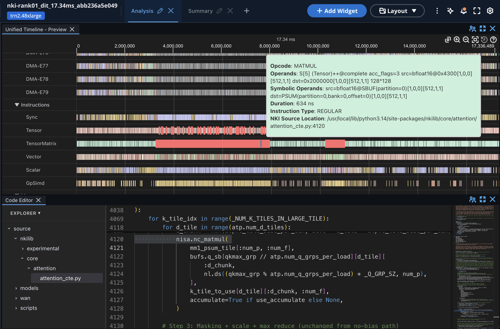

World models like LingBot-World, Self Forcing, Rolling Forcing and StreamDiffusion build on this video diffusion pipeline.

It runs chunk by chunk, steered by actions, reading a KV cache of a sink and a rolling window.
Each NeuronCore has its own SBUF and four engines, and DMA moves data between HBM and SBUF.

You write native PyTorch, the Neuron SDK compiles it, and EKS places it on the devices.
Move the model to the neuron device first, and keep its output as the reference for every later step.
NEURON_DEVICE = torch.device("neuron")
torch.neuron.set_device(local_rank)
text_encoder.model = text_encoder.model.to(NEURON_DEVICE)
vae.model = vae.model.to(device=NEURON_DEVICE, dtype=torch.bfloat16)Code: inference_neuron_ti2v.py#L72, #L194-L213, rope_neuron.py
Compiling small modules works, but leaves many small graphs with Python and collectives in between.
block.ffn = torch.compile(block.ffn, backend="neuron", dynamic=False)
@torch.compiler.disable # forces a graph break around every collective
def all_reduce_sum(x): ...Code: models/tp_utils.py#L119-L128
One graph per transformer block, collectives inside, lets the compiler fuse the ops.
import torch.distributed._functional_collectives as funcol
def _all_reduce(x):
return funcol.all_reduce(x, "sum", get_tp_group()) # traced: lives inside the graph
class _FastBlock(nn.Module):
def forward(self, x, e, cos, sin, ck, cv):
# norm + modulation, QKV, QK-norm, RoPE, attention, O-proj + all-reduce,
# cross-attention, FFN + all-reduce, gated residuals: all in one graph
...
kw = dict(backend="neuron", dynamic=False, fullgraph=True)
self.blocks = [torch.compile(_FastBlock(b, ...), **kw) for b in model.blocks]Code: models/fast_dit.py#L260-L311, #L586-L645
Compile the repeated block, not the whole loop: one small graph, compiled once, called for every block.
Before, unrolled
# animation: decoder = torch.compile(self.decoder)
decoder = torch.compile(self.decoder, backend="neuron", dynamic=False)
for i in range(iter_): # once per latent frame
# animation: out = decoder(x)
out_ = decoder(x[:, :, i:i + 1],
feat_cache=self._feat_map, feat_idx=self._conv_idx)
class Decoder3d(nn.Module):
def forward(self, x, feat_cache=None, feat_idx=[0], first_chunk=False):
# animation: for block in blocks (traced: all 14 blocks go into ONE graph)
for layer in self.middle: # 2 ResidualBlocks (+ attention): blocks 1-2
x = layer(x, feat_cache, feat_idx)
for layer in self.upsamples: # 4 stages, 3 ResidualBlocks each: blocks 3-14
x = layer(x, feat_cache, feat_idx, first_chunk)After, rolled
# animation: G = torch.compile(block_body)
_rolled_res_compiled = torch.compile(_rolled_res_unit, backend="neuron", dynamic=False)
class Decoder3d(nn.Module):
def forward(self, x, feat_cache=None, feat_idx=[0], first_chunk=False):
# animation: for block in blocks (unchanged, plain Python, NOT compiled)
for layer in self.middle: ... # blocks 1-2
for layer in self.upsamples: ... # blocks 3-14
class ResidualBlock(nn.Module):
def forward(self, x, feat_cache=None, feat_idx=[0]):
# animation: x = G(x, cache, block.weights)
out, n1, n2 = _rolled_res(x, feat_cache[i], feat_cache[i + 1], # calls G
r[0].gamma, r[2].weight, r[2].bias, ...)Code: #L969-L984, #L836-L847, #L340, #L895-L905
Profile the compiled graph: here the matrix engine sits idle while the softmax runs.


Replace the hot op with an NKI kernel that keeps the engines busy.
from nkilib.core.attention.attention_cte import attention_cte
def _cte(q, k, v):
qn = q.permute(0, 2, 1, 3).reshape(B * n, Lq, d)
kn = k.permute(0, 2, 3, 1).reshape(B * n, d, Lk)
vn = v.permute(0, 2, 1, 3).reshape(B * n, Lk, d)
return attention_cte(qn, kn, vn, scale=d ** -0.5, causal_mask=False)
Code: models/fast_dit.py#L228-L241
Read each KV chunk in place and merge the partial results, instead of copying the cache on every attention call.
Before
# animation: new buffer (HBM), zero-filled, padded up to the tile edge
lkv_p = lkv + (KV_ALIGN - lkv % KV_ALIGN) % KV_ALIGN
k_c = q.new_zeros((n, lkv_p, d), dtype=dtype)
v_c = q.new_zeros((n, lkv_p, d), dtype=dtype)
# animation: copy sink, chunk 1, 2, 3 into it -- on every attention call
off = 0
for kc, vc in zip(k_chunks, v_chunks):
L = int(kc.shape[1])
k_c[:, off:off + L] = kc[0].permute(1, 0, 2).to(dtype)
v_c[:, off:off + L] = vc[0].permute(1, 0, 2).to(dtype)
off += L
# animation: ONE attention_cte call over the whole buffer -> out
out = _attention_cte(q_c, k_c, v_c, scale=1.0, causal_mask=False,
tp_q=True, tp_k=True, tp_out=False)After
# animation: for chunk in KV cache (HBM) -- one call per chunk, read in place
for kc, vc in zip(k_chunks, v_chunks):
o, neg_max, s = _attention_cte(q_c, kc, vc, scale=1.0, causal_mask=False, ...,
cache_softmax=True, skip_output_normalization=True)
outs.append(o) # animation: partial (unnormalized output)
maxs.append(-neg_max.float()) # + its row max
sums.append(s.float()) # + its row sum
# animation: merge -- rescale each partial by the max, add up, divide (exact)
m_all = maxs[0]
for m in maxs[1:]:
m_all = torch.maximum(m_all, m)
w = [torch.exp(m - m_all) for m in maxs]
out = sum(wc * o for wc, o in zip(w, outs)) / sum(wc * sc for wc, sc in zip(w, sums))Code: attention.py#L436-L455, attention.py#L652-L682
Use TP inside a device until the heads stop splitting, then CP across devices.
The same six ideas took Wan2.2 from 76.6 s to 8.7 s, and LingBot-World v2 from 6.8 to 25 fps.
| Idea | In one line | Where in this talk |
|---|---|---|
| 1. Correct first | Start eager on the neuron device and check every step against it. | 5 |
| 2. Big, reusable graphs | One compiled graph per repeated block, collectives inside, loops rolled. | 6, 7 |
| 3. Busy engines | Profile, find where the engines take turns, and use a kernel that overlaps them. | 8 |
| 4. Less data movement | Copies, calls and small DMAs often cost more than the math. | 9 |
| 5. Split across cores | TP inside a device, CP across devices; measure the layout. | 10 |
| 6. A fed device | Warm up, gate readiness on it, and keep the host off the critical path. |
| Wan2.2-TI2V-5B, one trn2 device | Ideas | Per video |
|---|---|---|
| Eager | 1 | 76.6 s |
| + torch.compile | 2 | 36.8 s |
| + VAE on 8 cores, NKI convs | 5, 3 | 16.1 s |
| + NKI attention, parallel layouts | 3, 5 | 10.8 s |
| + VAE fusion, host fixes | 4, 6 | 8.7 s |
| LingBot-World v2, 16 trn2 devices | Ideas | Per video | fps |
|---|---|---|---|
| Upstream port | 11.90 s | 6.81 | |
| + merged attention, SP | 4, 5 | 8.75 s | 9.26 |
| + fused bf16 VAE, paired chunks | 2, 4 | 5.29 s | 15.32 |
| + host fixes, VAE tiles | 6, 5 | 4.37 s | 18.55 |
| + tuned attention kernel | 4 | 3.97 s | 20.43 |
| + chained calls, constant offset | 4, 3 | 3.36 s | 24.12 |
| + less work before the first block | 6 | 3.24 s | 25.02 |
| 8 devices (half a host), with the softmax check | 1 | 4.40 s | 18.40 |